PROGRAMAS DE TELÉVISION
TELEVISION SHOWS
TELEVISION SHOWS
| Portada Cover |
Titulo Title |
Año Year |
Idioma Language |
Temporadas Seasons |
Formato Format |
Resolución Resolution |
Elenco Cast |
Notas Notes |
|---|---|---|---|---|---|---|---|---|
| The 13 Ghosts of Scooby-Doo | 1985 | EN | 1 | mp4 | 480p | Arte Johnson, Phil Hartman, Howard Morris, Susan Blu, Vincent Price, Casey Kasem, Don Messick, Heather North | ||
| 1916: The Irsh Rebellion | 2016 | EN | 1 | mp4 | SD | Liam Neeson | ||
| 2point4 Chldren | 1991 | EN | 8 | mp4 | SD | Belinda Lang, Gary Olsen, Clare Woodgate, John Pickard, Alex Kew, Julia Hills, Kim Benson, Clare Buckfield,Ray Polhill, Leonard O'Malley, Brian Hall, Gareth Owen, Gwynne Davies, John Cater, Keith Bisset, Leonard O'Malley, Natasha Knight, Owen Brenman, Ray Polhill, Stephen Aintree | ||
 |
The ABC Murders | 2018 | EN | 1 | mp4 | 720p | John Malkovich, Rupert Grint, Andrew Buchan, Eamon Farren, Jack Farthing, Gregor Fisher, Tara Fitzgerald, Henry Goodman, Shirley Henderson, Bronwyn James, Freya Mavor, Kevin McNally | |
| Absolutely Fabulous | 1992 | EN | 7 | mp4 | 480p | Jennifer Saunders, Joanna Lumley, Julia Sawalha, Jane Horrocks, June Whitfield, ChristopherMalcom, Christopher Ryan, Mo Gaffney, Naoko Mori, Celia Imrie, Helen Lederer, Harriet Thorpe, Gary Beadle, Kathy Burke, Lulu, Miranda Richardson | ||
| The Addams Family | 1964 | EN | 2 | mp4 | SD | Carolyn Jones, John Astin, Jackie Coogan, Ted Cassidy, Marie Blake, Lisa Loring, Ken Weatherwax | ||
| The Adventures of Tintin | N/A | EN | 1 | mp4 | 576p | Colin O'Meara, Wayne Robson, Julie Lemieux, Dan Hennessey, Vernon Chapman,Peter Meech, David Fox, Maureen Forrester, John Stocker, Susan Roman | ||
| Africa | 2013 | EN | 1 | mp4 | 1080p | David Attenborough | ||
| Agatha Christie's Partners in Crime | 1983 | EN | 1 | mp4 | 1080p | Francesca Annis, James Warwick, Reece Dinsdale, Arthur Cox | ||
| Agatha Christie's Poirot | 1989 | EN | 13 | mp4 | 1080p | David Suchet, Pauline Moran, Philip Jackson, Hugh Fraser, Zoë Wannamaker | ||
| ALF | 1986 | EN | 5 | mp4 | SD | Max Wright, Andrea Elson, Anne Schedeen, Josh Blake, Anne Meara, John LaMotta, Benji Gregory, Liz Sheridan, Joan Embery, Paul Fusco | ||
| 'Allo 'Allo! | 1982 | EN | 9 | mp4 | 480p | Gorden Kaye, Carmen Silvera, Vicki Michelle, Francesca Gonshaw, Sue Hodge, Francesca Gonshaw, Jack Haig, Kirsten Cooke, Richard Marner, Sam Kelly, Guy Siner, Rose Hill, Hilary Minster, Kim Hartman, Richard Gibson, John Louis Mansi, Kenneth Connor, Arthur Bostrom, Kim Hartman, Gavin Richards, John D. Collins, Nicholas Frankau | ||
| American Dad! | 2005 | EN | 13 | mp4 | SD | Seth MacFarlane, Wendy Schaal, Rachael MacFarlane, Scott Grimes, Dee Bradley Baker, Jeff Fischer, Patrick Stewart, André Sogliuzzo, Carmen Electra, Chris Cox, Curtis Armstrong, Daisuke Suzuki, Jeff Fischer, Kevin Michael Richardson, Mike Barker, Mike Henry, Natasha Melnick | ||
| Ancient Egypt: Life and Death in the Valley of the Kings | 2013 | EN | 1 | mp4 | 720p | Joann Fletcher | ||
| And Then There Were None | 2015 | EN | 1 | mp4 | 1080p | Douglas Booth, Charles Dance, Maeve Dermody, Burn Gorman, Anna Maxwell Martin, Miranda Richardson, Toby Stephens, Noah Taylor, Aidan Turner | ||
| Angels in America | 2003 | EN | 1 | mp4 | 720p | Al Pacino, Patrick Wilson, Meryl Streep, James Cromwell, Jeffrey Wright, Mary-Louise Parker, Justin Kirk, Emma Thompson, Ben Shenkman | ||
| Another Audience With Ken Dodd | 2002 | EN | 1 | mp4 | 480p | Ken Dodd | ||
 |
Are You Beng Served? | 1972 | EN | 11 | mp4 | 480p | John Inman, Mollie Sugden, Frank Thornton, Trevor Bannister, Wendy Richard, Arthur Brough, Nicholas Smith, Harold Bennett, James Hayter, Larry Martyn, Arthur English, Nicholas Alfie Bass, Mike Berry, Doremy Vernon, Benny Lee, Kenneth Waller, Vivienne Johnson, Milo Sperber | |
| As Time Goes By | 1992 | EN | 10 | mp4 | 480p | Judi Dench, Geoffrey Palmer, Jenny Funnell, Moira Brooker, Frank Middlemass, Joan Sims, Philip Bretherton, Janet Henfrey | ||
| Attenborough in Paradise and Other Personal Voyages | 1971 | EN | 1 | mp4 | 576p | David Attenborough | ||
| Attenborough's Life in Colour | 2021 | EN | 1 | mp4 | 1080p | David Attenborough | ||
| Attenborough's Life That Glows | 2016 | EN | 1 | mp4 | 720p | David Attenborough | ||
| Attenborough: 60 Years in the Wild | 2012 | EN | 1 | mp4 | 720p | David Attenborough | ||
| An Audience with Ken Dodd | 1994 | EN | 2 | mp4 | 576p | Ken Dodd | ||
| An Audience With Kenneth Williams | 1983 | EN | 3 | mp4 | 576p | Kenneth Williams | ||
| Les aventures de Tintin | 1991 | FR | 1 | mp4 | 480p | Thierry Wermuth, Susan Roman, Christian Pelissier, Henri Labussiere, Yves Barsacq, Jean-Pierre Moulin, Michel Ruhl, Marie Vincent, Michel Gudin, Serge Sauvion | ||
| Bagpuss | 1974 | EN | 1 | mp4 | 576p | Oliver Postgate, John Faulkner, Sandra Kerr | ||
| Banana | 2015 | EN | 1 | mp4 | 576p | Lynn Hunter, Letitia Wright, Fisayo Akinade, Luke Newberry, Nikki Fagbemi, Charlie Covell, Chloe Harris, Freddie Fox, Georgia Henshaw, Dino Fetscher, Russell T. Davies, Hannah John-Kamen, Alex Frost | ||
 |
Beautiful People | 2008 | EN | 2 | mp4 | SD | Luke Ward-Wilkinson, Layton Williams, Sophie Ash, Samuel Barnett, Olivia Colman, Aidan McArdle, Sarah Niles, Meera Syal | |
| Benidorm | 1968 | EN | 10 | mp4 | 720p | Jake Canuso, Janine Duvitski, Tony Maudsley, Elsie Kelly, Tim Healy, Sheila Reid, Siobhan Finneran, Oliver Stokes, Adam Gillen, Sherrie Hewson, Steve Pemberton, Kenny Ireland, Johnny Vegas, John Challis | ||
| The Benny Hill Show | 1968 | EN | 20 | mp4 | 480p | Benny Hill, Jenny Lee-Wright, Bob Todd, Henry McGee Jack Wright, Nicholas Parsons, Jon Jon Keefe, Roger Finch, Rita Webb, Patricia Hayes | ||
| The Best Of Frankie Howerd | N/A | EN | 1 | mp4 | 576p | Frankie Howerd | ||
 |
The Big Bang Theory | 2007 | EN | 12 | mp4 | 720p | Jim Parsons, Johnny Galecki, Kaley Cuoco, Kunal Nayyar, Simon Helberg, Melissa Rauch, Mayim Bialik, Laura Spencer, Sara Gilbert, Kevin Sussman, John Ross Bowie, Carol Ann Susi, Brian Patrick Wade, Christine Baranski | |
| Big Boys | 2022 | EN | 1 | mp4 | 1080p | Dylan Llewellyn, Jon Pointing, Camille Coduri, Olisa Odele, Izuka Hoyle, Katy Wix, Harriet Webb, Annette Badland, Jack Rooke | ||
| Blackadder | 1983 | EN | 5 | mp4 | 576p | Rowan Atkinson, Tony Robinson, Tim McInnerny, Hugh Laurie, Stephen Fry, Miranda Richardson, Rik Mayall, Miriam Margolyes, Patsy Byrne, Robbie Coltrane, Jim Broadbent | ||
| Bless Me Father | 1978 | EN | 3 | mp4 | 576p | Arthur Lowe, Daniel Abineri, Gabrielle Daye, David Ryall, Sheila Keith | ||
| Bless This House | 1971 | EN | 6 | mp4 | 480p | Sid James, Diana Coupland, Robin Stewart, Sally Geeson, Patsy Rowlands, Anthony Jackson | ||
| The Blue Planet | 2001 | EN | 1 | mp4 | 1080p | David Attenborough | ||
| Blue Planet II | 2017 | EN | 1 | mp4 | 720p | David Attenborough | ||
| The Borgias | 2011 | EN | 3 | mp4 | 720p | Jeremy Irons,Colm Feore, Michel Muller, Simon McBurney, Holliday Grainger, Gina McKee, Aidan Alexander, Joanne Whalley, Augustus Prew, David Oakes, Peter Sullivan, Sean Harris, Ruta Gedmintas, Luke Pasqualino, Elyes Gabel, Julian Bleach, Ronan Vibert, François Arnaud, Montserrat Lombard, Lotte Verbeek, Ivan Kaye, Steven Berkoff, Derek Jacobi, Emmanuelle Chriqui | ||
| The Borgias | 1981 | EN | 1 | mp4 | 480p | Adolfo Celi, Anne-Louise Lambert, Oliver Cotton, Alfred Burke, Maurice O'Connell, Louis Selwyn | ||
| Brideshead Revisited | 1981 | EN | 1 | mp4 | 480p | Jeremy Irons, Anthony Andrews, Laurence Olivier, Claire Bloom, Margaret Nolan, Jane Asher, Diana Quick, Charles Keating, Jeremy Sinden, Nickolas Grace | ||
| The Brittas Empire | 1991 | EN | 7 | mp4 | 480p | Chris Barrie, Pippa Haywood, Julia St. John, Tim Marriot, Judy Flynn, Jill Greenacre, Russell Porter, Anouschka Menzies, Harriet Thorpe, Michael Burns | ||
| Broadway The American Musical | 2004 | EN | 1 | mp4 | 480p | |||
| Butterflies | 1978 | EN | 5 | mp4 | SD | Wendy Craig, Geoffrey Palmer, Nicholas Lyndhurst, Andrew Hall, Bruce Montague, Michael Ripper, Joyce Windsor | ||
| 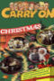 | Carry On Christmas Specials | 1969 | EN | 1 | mp4 | 720p | Sid James, Bernard Bresslaw, Terry Scott, Peter Butterworth, Charles Hawtrey, Frankie Howerd, Hattie Jacques, Barbara Windsor | |
| Carry on Laughing | 1970 | EN | 2 | mp4 | 720p | Sid James, Joan Sims, Bernard Bresslaw, Barbara Windsor, Hattie Jacques, Kenneth Connor, Peter Butterworth, Jack Douglas, David Lodge | ||
| Carta a Eva | 2013 | EN | 1 | mp4 | 480p | Julieta Cardinali, Ana Torrent, Nora Navas, Jesús Castejón, Carmen Maura | ||
| The Chronicles of Narnia | 1988 | EN | 3 | mp4 | 576p | Barbara Kellermann, Big Mick, Camilla Power, David Thwaites, Geoffrey Russell, George Claydon, Henry Woolf, Jean Marc Perret, Jeffrey Perry, Kerry Shale, Lesley Nicol, Martin Stone, Maureen Morris, Michael Aldridge, Richard Henders, Robert Lang, Ronald Pickup, Tom Baker, Warwick Davis | ||
| The Clangers | 1969 | EN | 2 | mp4 | 480p | Oliver Postgate | ||
| Clarence | 1988 | EN | 1 | mp4 | SD | Ronnie Barker, Josephine Tewson | ||
| The Cleopatras | 1982 | EN | 1 | mp4 | 480p | Caroline Mortimer, Sue Holderness, Pauline Moran, Richard Griffiths, David Horovitch, Graham Seed, Ian McNeice, Graham Crowden, Robert Hardy, Christopher Neame, Patrick Troughton | ||
| Come Fly With Me | 2010 | EN | 1 | mp4 | SD | Matt Lucas, David Walliams | ||
| The Crown | 2016 | EN | 4 | mp4 | 720p | |||
| Cucumber | 2015 | EN | 1 | mp4 | SD | Vincent Franklin, Cyril Nri, Con O'Neill, Julie Hesmondhalgh, Freddie Fox, Luke Newberry, Peter Caulfield, James Murray, Cel Spellman, Letitia Wright, Matthew Bailey, Dino Fetscher, Fisayo Akinade, Russell T. Davies | ||
| Dad's Army | 1968 | EN | 10 | mp4 | SD | Arthur Lowe, John Le Mesurier, Clive Dunn, John Laurie, James Beck, Arnold Ridley, Ian Lavender, Janet Davies, Bill Pertwee, Frank Williams | ||
| Dad's Army: The Lost Episodes | 2019 | EN | 1 | mp4 | SD | Kevin McNally, Robert Bathurst, Kevin Eldon, Timothy West, Mathew Horne, David Hayman, Tom Rosenthal, Simon Ludders, Christopher Villiers, Sam Phillips | ||
| Dahmer - Monster: The Jeffrey Dahmer Story | 2022 | EN | 1 | mp4 | 720p | Evan Peters, Richard Jenkins, Molly Ringwald, Michael Learned, Niecy Nash | ||
 |
Dastardly & Muttley in Their Flying Machines | 1969 | EN | 1 | mp4 | SD | Don Messick, Paul Winchell | |
| David Attenborough's Conquest of the Skies | 2015 | EN | 1 | mp4 | 720p | David Attenborough | ||
| David Attenborough's Natural Curiosities | 2013 | EN | 4 | mp4 | 720p | David Attenborough | ||
| David Attenborough's Rise of Animals: Triumph of the Vertebrates | 2013 | EN | 1 | mp4 | 720p | David Attenborough | ||
| David Attenborough's Wild City | 2016 | EN | 1 | mp4 | 1080p | David Attenborough | ||
| Dear Ladies | 1983 | EN | 3 | mp4 | 576p | Patrick Fyffe, George Logan | ||
| Desmond's | 1989 | EN | 6 | mp4 | 480p | Norman Beaton, Carmen Munroe, Ram John Holder, Geff Francis, Kimberly Walker, Justin Pickett, Gyearbuor Asante, Dominic Keating, Mona Hammond, Lisa Geoghan, Mathilda Thorpe, Joan Ann Maynard, Treva Etienne | ||
| dinnerladies | 1998 | EN | 2 | mp4 | SD | Victoria Wood, Julie Walters, Andrew Dunn, Anne Reid, Thelma Barlow, Maxine Peake, Shobna Gulati, Duncan Preston, Celia Imrie, Sue Devaney | ||
| The Doctor Blake Mysteries | 2013 | EN | 4 | mp4 | SD | Craig McLachlan, Nadine Garner, Rick Donald, Cate Wolfe, Joel Tobeck, Charlie Cousins | ||
| Doctor Who | 1963 | EN | 27 | mp4 | 480p | William Hartnell, Patrick Troughton, Jon Pertwee, Tom Baker, Peter Davison, Colin Baker, Sylvester McCoy, Richard Hurndall, Paul McGann, Carole Ann Ford, Elisabeth Sladen, Katy Manning, Frazer Hines, Mary Tamm, Peter Purves, Bonnie Langford, Nicholas Courtney, Roger Delgado, Caroline John, William Russell, Lalla Ward | includes Specials, Extras and all recreated episodes to date. | |
| Doctor Who | 2005 | EN | 13 | mp4 | 720p | Christopher Eccleston, David Tennant, Matt Smith, Peter Capaldi, Jodie Whittaker, Billie Piper, Catherine Tate, Noel Clarke, John Simm, Freema Agyeman, Jenna Coleman, Camille Coduri, John Barrowman, Alex Kingston, Karen Gillan, Arthur Darvill, Matt Lucas, Pearl Mackie, Bradley Walsh, Tosin Cole, Mandip Gill | includes Specials and Extras | |
| Doctor Who Confidential | 2005 | EN | 7 | mp4 | 720p | |||
| Don't Drink The Water | 1974 | EN | 2 | mp4 | 576p | Stephen Lewis, Pat Coombs, Derek Griffiths, John Louis Mansi, Christine Shaw, Muguette de Braie, Frank Coda, Ray Exposite, Rosario Serrano, Tony Lord | ||
| Easter Island: Mysteries of a Lost World | 2014 | EN | 1 | mp4 | 720p | Jago Cooper | ||
| Egypt | 2005 | EN | 1 | mp4 | SD | Stuart Graham, Julian Wadham, Caroline Langrishe, Alex Weaver, Valentine Pelka, William Hope, Laurence Fox, Matthew Kelly, Lynsey Baxter, Nevan Finnigan, Robert Portal, Richard Dempsey, Thomas Lockyer, Joseph Long, Elliot Cowan, Stuart Bunce | ||
| Egypt Unwrapped | 2008 | EN | 1 | mp4 | 720p | Mark Halliley | ||
| The Fall and Rise of Reginald Perrin | 1976 | EN | 3 | mp4 | 480p | Leonard Rossiter, Pauline Yates, Geoffrey Palmer, Bruce Bould, John Barron, Tim Preece | ||
| Fall of Eagles | 1974 | EN | 1 | mp4 | SD | Laurence Naismith, Patrick Stewart, Isla Blair, Barry Foster, Gayle Hunnicutt, Curd Jürgens, Maurice Denham, Gemma Jones, T.P. McKenna, Barry Foster, Frank Thorton, Marius Goring, Peter Woodthrope, Pamela Brown, Peter Vaughn, Robert Brown, Laurence Hardy, Diane Keen, Frank Middlemass, Jan Francis, Derek Francis, Freddie Jones, Sandor Elès, Michael Kitchen, Ursula Howells | ||
| Family Guy | 1995 | EN | 20 | mp4 | 576p | Seth MacFarlane, Alex Borstein, Seth Green, Mila Kunis, Mike Henry, Patrick Warburton, Lacey Chabert, Adam West | ||
| Father Brown | 1974 | EN | 1 | mp4 | 480p | Kenneth More, David Burgess | ||
| Father Brown | 2013 | EN | 9 | mp4 | SD | Mark Williams, Sorcha Cusack, Nancy Carroll, Alex Price, Tom Chambers, Hugo Speer, Jack Deam, John Light, John Burton Emer Kenny, Kasia Koleczek | ||
| Father Ted | 1995 | EN | 4 | mp4 | 480p | Dermot Morgan, Pauline McLynn, Ardal O'Hanlon, Frank Kelly, Graham Norton, Gerard Lee, Mark Murray, Noelle Brown, Pat Shortt, Patrick Drury, Rynagh O'Grady | ||
| Fawlty Towers | 1975 | EN | 2 | mp4 | 480p | John Cleese, Prunella Scales, Andrew Sachs, Connie Booth, Ballard Berkeley, Renee Roberts, Gilly Flower, Brian Hall | ||
| A Fine Romance | 1981 | EN | 4 | mp4 | 480p | Judi Dench, Michael Williams, Susan Penhaligon, Richard Warwick | ||
| 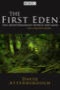 | The First Eden | 1987 | EN | 1 | mp4 | 576p | David Attenborough | |
| First Life with David Attenborough | 2010 | EN | 1 | mp4 | 720p | David Attenborough | ||
| The Flash Gordon Serials [1936-1940] | 1936 | EN | 3 | mp4 | 480p | Buster Crabbe, Jean Rogers, Charles Middleton, Frank Shannon | ||
| The Flintstones | 1959 | EN | 6 | mp4 | 480p | Alan Reed, Jean Vander Pyl, Mel Blanc, Bea Benaderet, Gerry Johnson, Don Messick | ||
| Frankensten | 2004 | EN | 1 | mp4 | 720p | Alec Newman, Luke Goss, Julie Delpy, Nicole Lewis, Monika Hilmerová, Donald Sutherland, William Hurt, Dan Stevens | ||
| Frozen Planet | 2011 | EN | 1 | mp4 | 1080p | David Attenborough | ||
| Futurama | 1999 | EN | 7 | mp4 | 720p | Billy West, Katey Sagal, John DiMaggio, Lauren Tom, Phil LaMarr,Maurice LaMarche, David Herman, Tress MacNeille, Byrne Offutt, Dick Clark, Leonard Nimoy | ||
 |
Galapagos with David Attenborough | 2013 | EN | 1 | mp4 | 720p | David Attenborough | |
| Game of Thrones | 2010 | EN | 8 | mp4 | 1080p | Sean Bean, Mark Addy, Nikolaj Coster-Waldau, Michelle Fairley, Lena Headey, Emilia Clarke, Iain Glen, Harry Lloyd, Kit Harington, Richard Madden, Sophie Turner, Maisie Williams, Alfie Allen, Isaac Hempstead Wright, Jack Gleeson, Rory McCann, Peter Dinklage, Aidan Gillen, Liam Cunningham, John Bradley, Stephen Dillane, Carice van Houten, James Cosmo, Jerome Flynn, Conleth Hill, Sibel Kekilli, Natalie Dormer, Charles Dance, Oona Chaplin, Rose Leslie, Joe Dempsie, Kristofer Hivju, Gwendoline Christie, Iwan Rheon, Hannah Murray, Michiel Huisman, Nathalie Emmanuel, Dean-Charles Chapman, Indira Varma, Tom Wlaschiha, Michael McElhatton, Jonathan Pryce, Jacob Anderson | ||
| George and Mildred | 1976 | EN | 5 | mp4 | 480p | Yootha Joyce, Brian Murphy, Sheila Fearn, Norman Eshley, Avril Elgar, Roy Kinnear, Reginald Marsh, Gretchen Franklin, Nicholas Bond Owen | ||
| Gimme Gimme Gimme | 1999 | EN | 3 | mp4 | 480p | James Dreyfus, Kathy Burke, Rosalind Knight, Brian Bovell, Beth Goddard, Doña Croll, Simon Shepherd | ||
| Going Straight | 1978 | EN | 1 | mp4 | SD | Ronnie Barker, Richard Beckinsale, Fulton Mackay, Patricia Brake, Nicholas Lyndhurst, Michael Turner, David Swift, Rowena Cooper | ||
| The Golden Girls | 1985 | EN | 7 | mp4 | SD | Beatrice Arthur, Betty White, Rue McClanahan, Estelle Getty, Herb Edelman, Harold Gould | ||
| 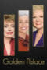 | The Golden Palace | 1992 | EN | 1 | mp4 | 480p | Betty White, Rue McClanahan, Estelle Getty, Don Cheadle, Cheech Marin, Billy L. Sullivan, Beatrice Arthur | |
| Grace & Favour | 1992 | EN | 2 | mp4 | 480p | John Inman, Frank Thornton, Mollie Sugden, Wendy Richard, Nicholas Smith, Fleur Bennett, Billy Burden, Steve Edwin, Andrew Barclay, Michael Bilton, Shirley Cheriton, Eric Dodson, Joanne Heywood, Akemi Otani, Patrick Fyffe, Jeremy Lloyd, Roger Avon, Diane Holland | ||
| Great Barrier Reef | 2012 | EN | 1 | mp4 | 1080p | David Attenborough | ||
| The Great Egyptians | 1998 | EN | 1 | mp4 | 576p | Bob Brier | ||
| The Great Rift: Africa's Wild Heart | 2010 | EN | 1 | mp4 | 720p | Hugh Quarshie | ||
| The Green Planet | 2022 | EN | 1 | mp4 | 1080p | David Attenborough | ||
| Hallelujah! | 1983 | EN | 2 | mp4 | 480p | Thora Hird, Patsy Rowlands, David Daker, Rosamund Greenwood, Walter Gotell, Keith David, Garfield Morgan | ||
| Hammer House of Horror | 1952 | EN | 1 | mp4 | SD | Jon Finch, Patricia Quinn, Michael Latimer, Julia Foster, Dinah Sheridan, Denholm Elliott, Lucy Gutteridge, Gary Bond, Barbara Kellerman, Norman Beaton, Geoffrey Beevers, Marius Goring, Peter Cushing, Brian Cox, Diana Dors, Christopher Cazenove, Robert Urquhart, Suzanne Danielle, Anthony Valentine, Siân Phillips, Pierce Brosnan, Barbara Ewing, JSimon MacCorkindale, Gary Raymond, Brenda Cowling, Peter McEnery | ||
| Hark at Barker | 1969 | EN | 2 | mp4 | 576p | Ronnie Barker, Josephine Tewson, David Jason, Frank Gatliff, Mary Baxter, Moira Foot, Pauline Yates, Michael Palin, Jo Kendall, Ronnie Corbett | ||
| Heartstopper | 2022 | EN | 1 | mp4 | 1080p | Kit Connor, Joe Locke, William Gao, Yasmin Finney, Corinna Brown, Kizzy Edgell, Tobie Donovan, Rhea Norwood, Jenny Walser, Sebastian Croft, Cormac Hyde-Corrin, Fisayo Akinade, Chetna Pandya, Stephen Fry, Olivia Colman | ||
| Help! It's the Hair Bear Bunch | 1971 | EN | 1 | mp4 | SD | William Callaway, Daws Butler, John Stephenson, Joe E. Ross, Paul Winchell | ||
| 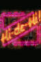 | Hi-de-Hi! | 1980 | EN | 9 | mp4 | SD | Simon Cadell, Ruth Madoc, Paul Shane, Su Pollard, Jeffrey Holland, Barry Howard, Diane Holland, Leslie Dwyer, Felix Bowness, David Griffin, Kenneth Connor, Ben Aris | |
| The Hidden History of Egypt & Rome | N/A | EN | 1 | mp4 | 576p | Terry Jones | ||
| Hong Kong Phooey | 1974 | EN | 1 | mp4 | SD | Ronald Feinberg, Janet Waldo, Scatman Crothers, Don Messick, Alan Oppenheim, Lee Vines, Casey Kasem, Paul Winchell, Bob Holt, John Stephenson, Frank Welker, Peter Leeds, Jay Lawrence | ||
| Hot In Cleveland | 2010 | EN | 6 | mp4 | 1080p | Valerie Bertinelli, Jane Leeves, Wendie Malick, Betty White | ||
| The Hound of the Baskervilles | 1982 | EN | 1 | mp4 | 480p | Tom Baker, Terence Rigby, Nicholas Woodeson, Christopher Ravenscroft, Kay Adshead, Will Knightley, Morris Perry, Gillian Martell, Caroline John, William Squire, Hubert Rees, Michael Goldie, John Boswall, Terry Forrestal | ||
| House of Cards | 1990 | EN | 3 | mp4 | 480p | Ian Richardson, Susannah Harker, Colin Jeavons, Diane Fletcher, Miles Anderson, Alphonsia Emmanuel, , Isla Blair, Paul Freeman, Nickolas Grace, Nick Brimble, Yolanda Vazquez, Michael Kitchen, Kitty Aldridge | ||
| The Huckleberry Hound Show | 1958 | EN | 4 | mp4 | 480p | Daws Butler | ||
| Human Planet | 2011 | EN | 1 | mp4 | 720p | John Hurt | ||
| Human Universe | 2014 | EN | 1 | mp4 | 720p | Brian Cox | ||
| The Hunt | 2015 | EN | 1 | mp4 | 720p | David Attenborough | ||
| I, Claudius | 1976 | EN | 1 | mp4 | 576p | Derek Jacobi, Brian Blessed, John Hurt, Siân Phillips, Patrick Stewart, James Faulkner, George Baker, Margaret Tyzack, John Rhys-Davies, Sheila White | ||
| Immortal Egypt with Joann Fletcher | 2016 | EN | 1 | mp4 | 720p | Joann Fletcher | ||
| In Loving Memory | 1979 | EN | 6 | mp4 | 480p | Thora Hird, Christopher Beeny, Sherrie Hewson, Paul Luty, Avis Bunnage, Liz Smith, Colin Farrell, Freddie Jones, Rose Power | ||
| The Inca: Masters of the Clouds | 2015 | EN | 1 | mp4 | 720p | Jago Cooper | ||
| It Ain't Half Hot Mum | 1974 | EN | 8 | mp4 | 480p | Windsor Davies, Michael Bates, George Layton, Melvyn Hayes, Don Estelle, Stuart McGugan, Kenneth MacDonald, Christopher Mitchell, Mike Kinsey, John Clegg, Donald Hewlett, Michael Knowles, Dino Shafeek | ||
| It’s a Sin | 2021 | EN | 1 | mp4 | 720p | Olly Alexander, Omari Douglas, Callum Scott Howells, Lydia West, Nathaniel Curtis,David Carlyle,Keeley Hawes, Shaun Dooley,Tracy Ann Oberman,Neil Patrick Harris,Stephen Fry | ||
| Jack the Ripper | 1988 | EN | 1 | mp4 | 1080p | Michael Caine, Lewis Collins, Armand Assante, Ray McAnally, Ken Bones, Susan George, Jane Seymour, Harry Andrews, Lysette Anthony, Gerald Sim, Hugh Fraser, Edward Judd | ||
| Jam and Jerusalem | 2006 | EN | 3 | mp4 | SD | Sue Johnston, Pauline McLynn, Dawn French, Maggie Steed, Joanna Lumley, Jennifer Saunders, Doreen Mantle, Rosie Cavaliero, David Mitchell, Patrick Barlow, Salima Saxton, Suzy Aitchison, Simon Farnaby, Sally Phillips | ||
| Jesus: Rise to Power | 2013 | EN | 1 | mp4 | SD | Michael Scott | ||
 |
The Job Lot | 2013 | EN | 3 | mp4 | SD | Russell Tovey, Sarah Hadland, Angela Curran, Adeel Akhtar, Jo Enright, Tamla Kari, Sophie McShera, Martin Marquez, Tony Maudsley, Emma Rigby, Mark Bagnall, Navin Chowdhry, Nigel Boyle | |
| Keeping Up Appearances | 1990 | EN | 6 | mp4 | 576p | Patricia Routledge, Clive Swift, Josephine Tewson, David Griffin, Judy Cornwell, Geoffrey Hughes, Shirley Stelfox, Mary Millar, Jeremy Gittins, Marion Barron, Anna Dawson, George Webb | ||
| Ken Dodd: Live Laughter Tour | N/A | EN | 1 | mp4 | 576p | Ken Dodd | ||
| Kingdom of Plants 3D | 2012 | EN | 1 | mp4 | 720p | David Attenborough | ||
| Let Them Eat Cake | 1999 | EN | 1 | mp4 | 576p | Jennifer Saunders, Dawn French, Alison Steadman, Lucy Punch, Adrian Scarborough | ||
| Life | 2009 | EN | 1 | mp4 | 1080p | David Attenborough | ||
| Life in Cold Blood | 2008 | EN | 1 | mp4 | 576p | David Attenborough | ||
| Life in the Freezer | 1993 | EN | 1 | mp4 | 576p | David Attenborough | ||
| Life in the Undergrowth | 2005 | EN | 1 | mp4 | 576p | David Attenborough | ||
| The Life of Birds | 1998 | EN | 1 | mp4 | 576p | David Attenborough | ||
| The Life of Mammals | 2002 | EN | 1 | mp4 | 720p | David Attenborough | ||
| 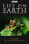 | Life on Earth | 1979 | EN | 1 | mp4 | 720p | David Attenborough | |
| Life Story | 2014 | EN | 1 | mp4 | 720p | David Attenborough | ||
| Little Britain | 2003 | EN | 4 | mp4 | 576p | David Walliams, Matt Lucas, Tom Baker, Anthony Head | ||
| Little Britain USA | 2008 | EN | 1 | mp4 | SD | David Walliams, Matt Lucas, Tom Baker, Rosie O'Donnell | ||
| The Living Planet | 1984 | EN | 1 | mp4 | 576p | David Attenborough | ||
| London Spy | 2015 | EN | 1 | mp4 | 1080p | Ben Whishaw, Jim Broadbent, Edward Holcroft, Samantha Spiro, Charlotte Rampling, Mark Gatiss, Harriet Walter | ||
| Lost Kingdoms of Central America | 2014 | EN | 1 | mp4 | 720p | Jago Cooper | ||
| Lost Kingdoms of South America | 2013 | EN | 1 | mp4 | 720p | Jago Cooper | ||
| Lost Worlds, Vanished Lives | 1989 | EN | 1 | mp4 | 576p | David Attenborough | ||
| Love Thy Neighbour | 2020 | EN | 2 | mp4 | 1080p | Jack Smethurst, Kate Williams, Rudolph Walker, Nina Baden-Semper, Tommy Godfrey | ||
| Love, Victor | 1972 | EN | 8 | mp4 | 1080p | Michael Cimino, George Sear, Rachel Hilson, Bebe Wood, Anthony Turpel, Isabella Ferreira, Ana Ortiz, James Martinez, Mason Gooding, Mateo Fernandez, Nick Robinson | ||
| Madagascar | 2011 | EN | 1 | mp4 | 720p | David Attenborough | ||
| The Magnifcent Evans | 1984 | EN | 1 | mp4 | SD | Ronnie Barker, Sharon Morgan, Dickie Arnold, Myfanwy Talog, William Thomas | ||
| Man About the House | 1973 | EN | 6 | mp4 | SD | Richard O'Sullivan, Sally Thomsett, Paula Wilcox, Yootha Joyce, Brian Murphy, Helen Fraser | ||
| Masters of the Pacific Coast: The Tribes of the American Northwest | 2016 | EN | 1 | mp4 | 1080p | Jago Cooper | ||
| The Mating Game | 2021 | EN | 1 | mp4 | 1080p | David Attenborough | ||
| Merlin | 2008 | EN | 5 | mp4 | SD | Colin Morgan, Bradley James, Katie McGrath, Angel Coulby, Richard Wilson, Anthony Head, Emilia Fox, John Hurt, Asa Butterfield, Michelle Ryan, Michael Cronin, Alexander Vlahos, Nathaniel Parker | ||
| Micro Monsters with David Attenborough | 2013 | EN | 1 | mp4 | 720p | David Attenborough | ||
| The Miracle of Bali | 1969 | EN | 1 | mp4 | 576p | David Attenborough | ||
 |
Miracle Workers | 2019 | EN | 3 | mp4 | 1080p | Daniel Radcliffe, Geraldine Viswanathan, Karan Soni, Jon Bass, Sasha Compère, Lolly Adefope, Steve Buscemi | |
| Miss Marple | 1984 | EN | 1 | mp4 | 720p | Joan Hickson, David Horovich, John Castle, Ian Brimble, Gwen Watford | ||
 |
Moby Dick | 1998 | EN | 1 | mp4 | 480p | Patrick Stewart, Henry Thomas, Gregory Peck, Ted Levine, Bruce Spence, Hugh Keays-Byrne, Piripi Waretini, Dominic Purcell, Norman D. Golden II, Norman Yemm, Shane Feeney Connor, Peter Sumner | |
| Moby Dick | 2011 | EN | 1 | mp4 | 1080p | William Hurt, Ethan Hawke, Charlie Cox, Eddie Marsan, Gillian Anderson, Billy Boyd, Raoul Trujillo, James Gilbert, Daniel Gordon, Matthew Lemche, Billy Merasty | ||
| Monty Python's Flying Circus | 1969 | EN | 4 | mp4 | 480p | John Cleese, Terry Gilliam, Eric Idle, Michael Palin, Graham Chapman, Terry Jones | ||
| Monty Python's Personal Best | 2006 | EN | 1 | mp4 | 480p | John Cleese, Terry Gilliam, Eric Idle, Michael Palin, Graham Chapman, Terry Jones | ||
| Mr. Pickles | 2013 | EN | 3 | mp4 | 1080p | Dave Stewart, Kaitlyn Robrock, Sean Conroy, Brooke Shields, Frank Collison, Alex Désert, Jay Johnston, Will Carsola, Dave Stewart, Barbara Goodson | ||
| Mrs Brown's Boys | 2011 | EN | 4 | mp4 | SD | Brendan O'Carroll, Jennifer Gibney, Eilish O'Carroll, Pat Shields, Rory Cowan, Paddy Houlihan, Fiona O'Carroll, Dermot O'Neill, Danny O'Carroll, Amanda Woods, Gary Hollywood, Fiona Gibney, Sorcha Cusack, Susie Blake, Martin Delany, Conor Maloney, Damien McKiernan | ||
| Mrs Brown's Boys: The Original Series | 2006 | EN | 1 | mp4 | SD | Brendan O'Carroll, Jennifer Gibney, Eilish O'Carroll, Rory Cowan, Paddy Houlihan, Fiona O'Carroll, Dermot O'Neill, Danny O'Carroll, Pat Shields , Eric O'Carroll, Amanda Woods, Gary Hollywood, Keith Duffy, Ronan Keating | ||
| 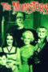 | The Munsters | 1964 | EN | 3 | mp4 | 720p | Fred Gwynne, Yvonne De Carlo, Al Lewis, Beverly Owen,Pat Priest, Butch Patrick | |
| Mysterious sland | 2005 | EN | 1 | mp4 | 1080p | Kyle MacLachlan, Danielle Calvert, Gabrielle Anwar, Patrick Stewart, Roy Marsden, Jason Durr, Omar Gooding, Vinnie Jones, Tom Mison, Chris Larkin | ||
| Nature's Great Events | 2009 | EN | 1 | mp4 | 720p | David Attenborough | ||
| Nearest and Dearest | 1968 | EN | 7 | mp4 | 480p | Hylda Baker, Jimmy Jewel, Madge Hindle, Joe Gladwin, Edward Malin, Freddie Rayner, Leslie Sarony, Bert Palmer | ||
| The New Scooby-Doo Movies | 1972 | EN | 2 | mp4 | 480p | Casey Kasem, Frank Welker, Jackie Joseph, Heather North, Mike Road, Casey Kasem, Cindy Henderson, Arlene Golonka, Ted Knight, Casey Kasem, Olan Soule, Barbara Pariot, Nicole Jaffe, Casey Kasem, Janet Waldo, Don Messick, Frank Welker, Joe Baker, Paul Winchell | ||
| Not on Your Nellie | 1973 | EN | 3 | mp4 | 480p | Hylda Baker, John Barrett, Leo Dolan, David Rayner, Roger Howlett, Jack Douglas, Wendy Richard, Alexandra Dane, Sue Nicholls | ||
| Odd Man Out | 1977 | EN | 1 | mp4 | 480p | John Inman, Josephine Tewson, Peter Butterworth, Avril Angers | ||
| Oh No It's Selwyn Froggitt | 1974 | EN | 3 | mp4 | 576p | Bill Maynard, Megs Jenkins, Harold Goodwin, Bill Dean, Ray Mort, Richard Davies, Rosemary Martin, Robert Keegan, Lynda Baron | ||
| On the Buses | 1969 | EN | 7 | mp4 | 576p | Reg Varney, Bob Grant, Stephen Lewis, Doris Hare, Cicely Courtneidge, Anna Karen, Michael Robbins | ||
| One Foot in the Grave | 1990 | EN | 7 | mp4 | 480p | Richard Wilson, Annette Crosbie, Doreen Mantle, Angus Deayton, Janine Duvitski, Owen Brenman | ||
| Only Fools and Horses | 1981 | EN | 8 | mp4 | 576p | David Jason, Nicholas Lyndhurst, Lennard Pearce, Buster Merryfield, John Challis, Roger Lloyd-Pack, Tessa Peake-Jones, Gwynneth Strong, Paul Barber, Sue Holderness, Kenneth MacDonald | ||
| Open All Hours | 1973 | EN | 4 | mp4 | SD | Ronnie Barker, David Jason, Lynda Baron, Kathy Staff, Stephanie Cole, Maggie Ollerenshaw, Barbara Flynn | ||
| Ordeal by Innocence | 2018 | EN | 1 | mp4 | 720p | Bill Nighy, Anthony Boyle, Anna Chancellor, Morven Christie, Crystal Clarke, Christian Cooke, Alice Eve, Matthew Goode, Ella Purnell, Eleanor Tomlinson ,Luke Treadaway | ||
| Our Planet | 2019 | EN | 1 | mp4 | 1080p | David Attenborough | ||
| Paddington | 1976 | EN | 1 | mp4 | 480p | Michael Hordern | ||
| The Pale Horse | 2020 | EN | 1 | mp4 | 1080p | Rufus Sewell, Sheila Atim, Georgina Campbell, Bertie Carvel, Kathy Kiera Clarke, James Fleet, Henry Lloyd-Hughes, Claire Skinner, Rita Tushingham, Sean Pertwee, Kaya Scodelario | ||
| 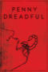 | Penny Dreadful | 2014 | EN | 3 | mp4 | 1080p | Eva Green, Josh Hartnett, Timothy Dalton, Harry Treadaway, Rory Kinnear, Reeve Carney, Billie Piper, Danny Sapani, Helen McCrory, Simon Russell Beale, Patti LuPone, Wes Studi, Sarah Greene, Shazad Latif, Jessica Barden, Christian Camargo, Perdita Weeks, Samuel Barnett, Olivia Chenery | |
| The People of Paradise | 1960 | EN | 1 | mp4 | 480p | David Attenborough | ||
| Perfect Planet | 2021 | EN | 1 | mp4 | 1080p | David Attenborough | ||
| The Perils of Penelope Pitstop | 1969 | EN | 1 | mp4 | 480p | Janet Waldo, Paul Lynde, Mel Blanc, Paul Winchell, Don Messick, Gary Owens | ||
| The Pink Panther | 1964 | EN | 4 | mp4 | 480p | Sherry Lynn, Brian George, Joe Pesci, Arte Johnson, Matt Frewer, Charles Nelson Reilly, Sonny Melendrez, Marvin Miller, Arnold Stang, John Byner, B.J. Ward, Paul Frees, Billy Bowles, Frank Welker, Pat Harrington Jr., Wallace Shawn, Marshall Efron, Larry D. Mann | ||
| Planet Earth | 2005 | EN | 1 | mp4 | 1080p | David Attenborough | ||
| Planet Earth II | 2016 | EN | 1 | mp4 | 1080p | David Attenborough | ||
| Planet Earth: The Future | 2006 | EN | 1 | mp4 | 576p | David Attenborough | ||
| Plants Behaving Badly | 2017 | EN | 1 | mp4 | 480p | David Attenborough | ||
| Please Sir | 1968 | EN | 4 | mp4 | 480p | John Alderton, Deryck Guyler, Joan Sanderson, Richard Davies, Noel Howlett, Liz Gebhardt, Peter Cleall, Peter Denyer, David Barry, Erik Chitty, Malcolm McFee, Penny Spencer, Jill Kerman | ||
| Police Squad! | 1982 | EN | 1 | mp4 | SD | Leslie Nielsen, Alan North, Ed Williams, Peter Lupus, Rex Hamilton, William Duell, Barbara Tarbuck, Jimmy Briscoe, Kathryn Leigh Scott, Lorne Greene, Russell Shannon, Terrence Beasor, Terry Wills | ||
| Porridge | 1973 | EN | 4 | mp4 | SD | Ronnie Barker, Richard Beckinsale, Fulton Mackay, Brian Wilde, Peter Vaughan, David Jason, Sam Kelly, Ronald Lacey, Ken Jones, David Daker, Maurice Denham, Tony Osoba, Alun Armstrong, Christopher Biggins, Brian Glover, Michael Barrington | ||
| Prisoner: Cell Block H | 1979 | EN | 8 | mp4 | SD | Val Lehman, Fiona Spence, Colette Mann, Patsy King, Maggie Kirkpatrick, Sheila Florance, Elspeth Ballantyne, Amanda Muggleton, Kerry Armstrong, Carol Burns, Mary Ward, Jane Clifton, Gerard Maguire, Judith McGrath, | ||
| The Private Life of Plants | 1995 | EN | 1 | mp4 | 576p | David Attenborough | ||
| 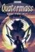 | Quatermass and the Pit | 1958 | EN | 1 | mp4 | 480p | André Morell, Cec Linder, Anthony Bushell, John Stratton, Christine Finn | |
| 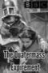 | The Quatermass Experiment | 1953 | EN | 1 | mp4 | 480p | Reginald Tate, Duncan Lamont, Paul Whitsun-Jones, Isabel Dean, Ian Colin | |
| Quatermass II | 1955 | EN | 1 | mp4 | 480p | John Robinson, Monica Grey, Hugh Griffith, John Stone | ||
| Queer as Folk | 1999 | EN | 2 | mp4 | 576p | Aidan Gillen, Charlie Hunnam, Craig Kelly, Denise Black, Andy Devine, Antony Cotton, Esther Hall | ||
| Queer As Folk | 2000 | EN | 5 | mp4 | 576p | Gale Harold, Randy Harrison, Hal Sparks, Peter Paige, Scott Lowell, Thea Gill, Michelle Clunie, Robert Gant, Sharon Gless, Jack Wetherall, Chris Potter, Sherry Miller, Harris Allan, Makyla Smith, Peter MacNeill, Matt Battaglia, Mitch Morris, Dean Armstrong | ||
| Queers | 2017 | EN | 1 | mp4 | 720p | Ben Whishaw, Fionn Whitehead, Russell Tovey, Rebecca Front, Ian Gelder, Kadiff Kirwan, Gemma Whelan, Alan Cumming | ||
| Quest Under Capricorn | N/A | EN | 1 | mp4 | 480p | David Attenborough | ||
| Rev. | 2010 | EN | 3 | mp4 | SD | Tom Hollander, Olivia Colman, Steve Evets, Miles Jupp, Ellen Thomas, Simon McBurney, Sylvia Syms | ||
| Rising Damp | 1974 | EN | 4 | mp4 | 576p | Leonard Rossiter, Frances De La Tour, Don Warrington, Richard Beckinsale | ||
| Rome | 2005 | EN | 2 | mp4 | 1080p | Kevin McKidd, Ray Stevenson, Ciarán Hinds, Polly Walker, Kenneth Cranham, James Purefoy, Tobias Menzies, Lindsay Duncan, Indira Varma, Max Pirkis, Kerry Condon, Lyndsey Marshal, Chiara Mastalli, David Bamber, Karl Johnson, Rick Warden, Lee Boardman | ||
| The Royle Family | 1998 | EN | 4 | mp4 | 480p | Ricky Tomlinson, Sue Johnston, Ralf Little, Caroline Aherne, Liz Smith, Craig Cash, Jessica Hynes, Andrew Whyment, Sheridan Smith, Geoffrey Hughes, Doreen Keogh, Peter Martin | ||
| Rumpole of the Bailey | 1978 | EN | 7 | mp4 | 576p | Leo McKern, Peggy Thorpe Bates, Marion Mathie, Peter Bowles, Patricia Hodge, Julian Curry, Jonathan Coy, Richard Murdoch, Abigail McKern, Joanna Van Gyseghem, Denis Lill, Samantha Bond, Peter Blythe | ||
| Santa Evita | 2022 | ES | 1 | mp4 | 1080p | Natalia Oreiro, Darío Grandinetti, Diego Velázquez, Francesc Orella, Diego Cremonesi, Ernesto Alterio, Damián Canduci, Guillermo Arengo, Gaby Ferrero, Jenni Merla, Fedra Defendente | ||
| The Sarah Jane Adventures | 2007 | EN | 5 | mp4 | SD | Elisabeth Sladen, Tommy Knight, Alexander Armstrong, Nicholas Courtney | ||
| Schitt's Creek | 2015 | EN | 6 | mp4 | 720p | Eugene Levy, Catherine O'Hara, Daniel Levy, Annie Murphy, Jennifer Robertson, Emily Hampshire, Tim Rozon, Chris Elliott, Dustin Milligan, Sarah Levy, John Hemphill, Karen Robinson, Rizwan Manji, Robin Duke, Steve Lund, Noah Reid | Scooby-Doo and Scrappy-Doo | 1979 | EN | 6 | mp4 | SD | Frank Welker, Casey Kasem, Don Messick, Patricia Stevens, Heather North |
| The Scooby-Doo Show | 1976 | EN | 3 | mp4 | 480p | Frank Welker, Casey Kasem, Don Messick, Heather North, Alan Oppenheimer, Stefanianna Christopherson, Jack Angel, Nicole Jaffe | ||
| Scooby-Doo! Mystery Incorporated | 2009 | EN | 2 | mp4 | SD | Frank Welker, Matthew Lillard, Grey DeLisle, Mindy Cohn, Patrick Warburton, Lewis Black, Gary Cole, Vivica A. Fox, Udo Kier, Kate Higgins, Tim Matheson, Tia Carrere, Linda Cardellini, Frances Conroy, Casey Kasem | ||
| Scooby-Doo, Where Are You! | 1969 | EN | 3 | mp4 | 480p | Daws Butler, Casey Kasem, Don Messick, Bob Holt, Joe Besser, Mel Blanc, Alan Reed, Julie Bennett, John Stephenson, Vernee Watson-Johnson, Marilyn Schreffler, Gary Owens, Frank Welker, Laurel Page | ||
| Secrets of the Krays | 2021 | EN | 1 | mp4 | 480p | |||
| 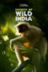 | Secrets of Wild India | 2012 | EN | 1 | mp4 | 1080p | David Attenborough | |
| See No Evil: The Moors Murders | 2006 | EN | 1 | mp4 | SD | Sean Harris, Maxine Peake, Joanne Froggatt, Matthew McNulty, George Costigan, Charlotte Emmerson, John Henshaw | ||
| Seven of One | 1973 | EN | 1 | mp4 | SD | Ronnie Barker, David Jason, David Valla, Elissa Derwent, Keith Chegwin, Sheila Brennan, Yootha Joyce | ||
| Seven Worlds, One Planet | 2018 | EN | 1 | mp4 | 1080p | David Attenborough | ||
| Sex Educaton | 2019 | EN | 3 | mp4 | mp4 | Asa Butterfield, Gillian Anderson, Ncuti Gatwa, Emma Mackey, Connor Swindells, Williams-Stirling, Alistair Petrie, Mimee Keene, Aimee Lou Wood, Chaneil Kular, Simone Ashley, James Purefoy, Tanya Reynolds, Patricia Allison, Mikael Persbrandt, Anne-Marie Duff | ||
| Shark | 2015 | EN | 1 | mp4 | SD | David Attenborough | ||
| Sherlock | 2010 | EN | 5 | mp4 | SD | Benedict Cumberbatch, Martin Freeman, Mark Gatiss, Andrew Scott, Rupert Graves, Una Stubbs | ||
| Sherlock Holmes | 1984 | EN | 7 | mp4 | 720p | Jeremy Brett, Edward Hardwicke, David Burke, Eric Porter, Colin Jeavons, Rosalie Williams, Charles Gray | ||
| The Simpsons | 1987 | EN | 32 | mp4 | 720p | Dan Castellaneta, Julie Kavner, Nancy Cartwright, Yeardley Smith | ||
| Sir Arthur Conan Doyle's Sherlock Holmes | 1964 | EN | 3 | mp4 | 480/td> | Douglas Wilmer, Peter Cushing, Nigel Stock | ||
| Six Dates wth Barker | 1971 | EN | 1 | mp4 | 576p | Ronnie Barker, Josephine Tewson, Christopher Timothy, Alan Curtis, Moira Foot, David Jason, Joan Sims, Derek Ware, Larry Martyn, Valentine Dyall, Freddie Jones, Michael Bates, Lesley-Anne Down, Michael Hordern, Victor Maddern | ||
| Smiley's People | 1982 | EN | 1 | mp4 | 720p | Alec Guinness, Anthony Bate, Bernard Hepton, Barry Foster, Patrick Stewart, Bill Paterson, Eileen Atkins, Ingrid Pitt, Michael Byrne, Michael Elphick, Michael Gough, Curd Jürgens, Dudley Sutton | ||
| Snagglepuss | 1961 | EN | 2 | mp4 | 480p | Daws Butler, Don Messick | ||
| Some Mothers Do 'Ave 'Em | 1973 | EN | 4 | mp4 | 576p | Michael Crawford, Michelle Dotrice | ||
| Sorry! | 1981 | EN | 7 | mp4 | 480p | Ronnie Corbett, Barbara Lott, William Moore, Roy Holder, Marguerite Hardiman | ||
| Space: 1999 | 1974 | EN | 2 | mp4 | SD | Martin Landau, Barbara Bain, Barry Morse, Prentis Hancock, Zienia Merton, Nick Tate, Clifton Jones | ||
| 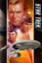 | Star Trek | 1966 | EN | 4 | mp4 | 720p | William Shatner, Leonard Nimoy, DeForest Kelley, James Doohan, Nichelle Nichols, George Takei, Walter Koenig | |
| Star Trek: Deep Space Nine | 1993 | EN | 7 | mp4 | 480p | Avery Brooks, Nana Visitor, René Auberjonois, Colm Meaney, Alexander Siddig, Michael Dorn, Terry Farrell, Armin Shimerman, Nicole de Boer, Cirroc Lofton, Andrew Robinson, Aron Eisenberg, Max Grodenchik | ||
| Star Trek: Dscovery | 2017 | EN | 3 | mp4 | 720p | Sonequa Martin-Green, Doug Jones, Shazad Latif, Anthony Rapp, Mary Wiseman, Jason Isaacs, Michelle Yeoh, Wilson Cruz, Anson Mount, Ethan Peck, Chris Obi | ||
| Star Trek: Enterprise | 2001 | EN | 4 | mp4 | SD | Scott Bakula, Jolene Blalock, Connor Trinneer, Anthony Montgomery, Dominic Keating, John Billingsley, Linda Park | ||
| Star Trek: Picard | 2001 | EN | 2 | mp4 | 1080p | Patrick Stewart, Jeri Ryan, Michelle Hurd | ||
| Star Trek: Strange New Worlds | 2001 | EN | 1 | mp4 | 1080p | Anson Mount, Ethan Peck, Rebecca Romijn | ||
| Star Trek: The Animated Series | 1973 | EN | 3 | mp4 | 480p | William Shatner, Leonard Nimoy, Nichelle Nichols, DeForest Kelley, George Takei, James Doohan, Majel Barrett | ||
| Star Trek: The Next Generation | 1987 | EN | 7 | mp4 | 1080p | Patrick Stewart, Jonathan Frakes, Brent Spiner, Michael Dorn, Marina Sirtis, Gates McFadden, LeVar Burton, Wil Wheaton, Whoopi Goldberg, Colm Meaney, Michelle Forbes, Denise Crosby, Diana Muldaur | ||
| Star Trek: Voyager | 1995 | EN | 7 | mp4 | SD | Kate Mulgrew, Robert Beltran, Robert Picardo, Roxann Dawson, Garrett Wang, Robert Duncan McNeill, Tim Russ, Jeri Ryan, Jennifer Lien, Ethan Phillips, Alicia Coppola | ||
| State of the Planet | 2000 | EN | 1 | mp4 | 576p | David Attenborough | ||
| Stephen Fry: Out There | 2013 | EN | 1 | mp4 | 720p | Stephen Fry | ||
| Steptoe and Son | 1962 | EN | 9 | mp4 | 480p | Harry H. Corbett, Wilfred Brambell | ||
| Still Open All Hours | 2013 | EN | 3 | mp4 | SD | David Jason, Johnny Vegas, James Baxter, Brigit Forsyth, Lynda Baron, Tim Healy, Stephanie Cole, Kulvinder Ghir, Maggie Ollerenshaw | ||
| 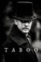 | Taboo | 2017 | EN | 1 | mp4 | 1080p | Tom Hardy, Jessie Buckley, Oona Chaplin, Tom Hollander, David Hayman, Mark Gatiss, Jonathan Pryce, Jason Watkins, Stephen Graham, Nicholas Woodeson, Edward Hogg | |
| 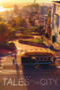 | Tales of the City | 1994 | EN | 3 | mp4 | 480p | Olympia Dukakis, Laura Linney, Barbara Garrick, William Campbell, Marcus D'Amico, Murray Bartlett, Paul Gross , Nina Foch , Cynda Williams, Chloe Webb, Thomas Gibson, Donald Moffat | |
 |
Tales of the Unexpected | 1979 | EN | 9 | mp4 | SD | ||
| Then Churchill Said to Me | 1993 | EN | 1 | mp4 | 576p | Frankie Howerd, Joanna Dunham, Michael Atwell | ||
| The Thin Blue Line | 1995 | EN | 2 | mp4 | SD | Rowan Atkinson, David Haig, Serena Evans, Rudolph Walker, Mark Addy, Mina Anwar, Kevin Allen, James Dreyfus, Joy Brook | ||
| This Is Going To Hurt | 2022 | EN | 1 | mp4 | 1080p | Ben Whishaw, Ambika Mod, Alex Jennings, Michele Austin, Rory Fleck Byrne, Ashley McGuire, Kadiff Kirwan | ||
 |
This Life | 1996 | EN | 3 | mp4 | 480p | Jack Davenport, Daniela Nardini, Andrew Lincoln, Amita Dhiri, Jason Hughes, Cyril Nri, Paul Medford, Natasha Little, David Mallinson, Ramon Tikarm, Luisa Bradshaw-White, Juliet Cowan, Gillian McCutcheon | |
| Tinker, Tailor, Soldier, Spy | 1979 | EN | 1 | mp4 | 720p | Alec Guinness, Hywel Bennett, Michael Jayston, Ian Bannen, Ian Richardson, Michael Aldridge, Alexander Knox, Bernard Hepton, Anthony Bate, George Sewell, Terence Rigby, Sian Phillips, Patrick Stewart | ||
| To the Manor Born | 1979 | EN | 3 | mp4 | 576p | Penelope Keith, Peter Bowles, Angela Thorne, Daphne Heard, Gerald Sim, Betty Tucker, John Rudling, Michael Bilton, Dennis Ramsden, Jonathan Elsom | ||
| Top Cat | 1961 | EN | 1 | mp4 | 480p | Paul Frees, Allen Jenkins, Maurice Gosfield, Marvin Kaplan, Arnold Stang, Leo DeLyon, John Stephenson | ||
| Torchwood | 2006 | EN | 4 | mp4 | 720p | John Barrowman, Eve Myles, Burn Gorman, Naoko Mori, Gareth David-Lloyd, Kai Owen | ||
| The Trials of Life | 1990 | EN | 1 | mp4 | 576p | David Attenborough | ||
| The Tribal Eye | 1975 | EN | 1 | mp4 | 576p | David Attenborough | ||
| The Truth About Climate Change | 2006 | EN | 1 | mp4 | 576p | David Attenborough | ||
| The Tudors | 2007 | EN | 4 | mp4 | 720p | Jonathan Rhys Meyers, Maria Doyle Kennedy, Natalie Dormer, Annabelle Wallis, Joss Stone, Tamzin Merchant, Joely Richardson, Henry Cavill, Anthony Brophy, James Frain, Sarah Bolger, Laoise Murray, Max Brown | ||
| Two Pints of Lager and a Packet of Crisps | 2001 | EN | 10 | mp4 | SD | Will Mellor, Sheridan Smith, Ralf Little, Natalie Casey, Kathryn Drysdale, Beverley Callard, Hayley Bishop, Luke Gell, Jonathan Dutton, Lee Oakes, Roger Ennals, Tony Bluto | ||
| The Two Ronnies | 1971 | EN | 13 | mp4 | 576p | Ronnie Barker, Ronnie Corbett | ||
| Two's Company | 1975 | EN | 4 | mp4 | 576p | Elaine Stritch, Donald Sinden | ||
| Up Pompeii | 1969 | EN | 3 | mp4 | 480p | Frankie Howerd, Elizabeth Larner, Max Adrian, Wallas Eaton, Kerry Gardner, Georgina Moon, William Rushton, Jeanne Mockford | ||
| Vera | 2011 | EN | 11 | mp4 | 576p | Brenda Blethyn, Kenny Doughty, Ibinabo Jack, Jon Morrison, Riley Jones, Paul Kaye, Steve Evets, David Leon, Wunmi Mosaku, Cush Jumbo, Clare Calbraith, Noof McEwan, Lisa Hammond, Paul Ritter, Christopher Colquhoun, Kingsley Ben-Adir, Sonya Cassidy | ||
| A Very English Scandal | 2018 | EN | 1 | mp4 | 720p | Ben Whishaw, Hugh Grant, Alex Jennings | ||
| 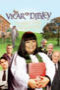 | The Vicar of Dibley | 1994 | EN | 4 | mp4 | 576p | Dawn French, Emma Chambers, James Fleet, Gary Waldhorn, John Bluthal, Liz Smith, Trevor Peacock, Roger Lloyd-Pack | |
| Vicious | 2013 | EN | 3 | mp4 | SD | Ian McKellen, Derek Jacobi, Frances De La Tour, Iwan Rheon, Philip Voss, Marcia Warren | ||
| Victoria Wood As Seen On TV | 1985 | EN | 2 | mp4 | 576p | Victoria Wood, Julie Walters, Celia Imrie, Duncan Preston | ||
| Wacky Races | 1968 | EN | 1 | mp4 | 480p | Janet Waldo, Paul Winchell, Daws Butler, Dave Willock, Don Messick, John Stephenson | ||
| Waiting for God | 1990 | EN | 6 | mp4 | 480p | Graham Crowden,Stephanie Cole,Sandra Payne,Michael Bilton,Dawn Hope,Janine Duvitski,Lucy Aston,Daniel Hill,Andrew Tourell | ||
| What's New Scooby-Doo? | 2002 | EN | 3 | mp4 | SD | Casey Kasem,Frank Welker,Mindy Cohn,Grey DeLisle,Frank Welker,Brian Unger,Chris Klug,Kevin Michael Richardson,Lauren Tom | ||
| Whoops Apocalypse | 1982 | EN | 1 | mp4 | 576p | Rik Mayall,Barry Morse,David Kelly,Bruce Montague,Richard Griffiths,Geoffrey Palmer,John Cleese,Peter Jones,John Barron,Richard Davies,Alexei Sayle | ||
| Wild Brazil | 2014 | EN | 1 | mp4 | 720p | Stephen Mangan | ||
 |
Wild China | 2008 | EN | 1 | mp4 | 720p | Bernard Hill | |
| Willo the Wsp | 1975 | EN | 1 | mp4 | 480p | Kenneth Williams | ||
| The Windsors | 2016 | EN | 4 | mp4 | SD | Kathryn Drysdale,Harry Enfield,Richard Goulding,Katy Wix,Haydn Gwynne,Ellie White,Matthew Cottle,Hugh Skinner,Celeste Dring,Tim Wallers,Louise Ford,Vicki Pepperdine,Gillian Bevan | ||
| The Witness for the Prosecution | 2016 | EN | 1 | mp4 | SD | Billy Howle, Andrea Riseborough, Monica Dolan, Kim Cattrall, Toby Jones, David Haig, Tim McMullan, Robert East, Dorian Lough, Hayley Carmichael, Paul Ready | ||
| The Wombles | 1973 | EN | 2 | mp4 | 720p | Bernard Cribbins | ||
| Years and Years | 2019 | EN | 1 | mp4 | 1080p | Russell Tovey, Rory Kinnear, T'Nia Miller, Ruth Madeley, Anne Reid, Jessica Hynes, Emma Thompson | ||
| Yes Minister | 1980 | EN | 4 | mp4 | 576p | Paul Eddington, Nigel Hawthorne, Derek Fowlds | ||
| Yes, Prime Minister | 1986 | EN | 2 | mp4 | 480p | Paul Eddington, Nigel Hawthorne, Derek Fowlds | ||
| The Yogi Bear Show | 1958 | EN | 3 | mp4 | 480p | June Foray,Greg Burson,Mel Blanc,Julie Bennett,Daws Butler,Don Messick | ||
| You're Only Young Twice | 1977 | EN | 4 | mp4 | 576p | Peggy Mount, Pat Coombs, Charmian May, Diana King, Lally Bowers, Johnny Wade, Georgina Moon, Peggy Ledger, Robert Raglan | ||
| 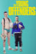 | The Young Offenders | 2016 | EN | 4 | mp4 | 720p | Alex Murphy,Chris Walley,PJ Gallagher,Hilary Rose,Dominic MacHale,Orla Fitzgerald,Shane Casey,Demi Isaac Oviawe,Jennifer Barry | |
| The Young Pope | 2016 | EN | 1 | mp4 | 720p | Jude Law, Diane Keaton, Silvio Orlando, Javier Cámara, Scott Shepherd, Cécile de France, Ludivine Sagnier, Toni Bertorelli, James Cromwell, Stefano Accorsi | ||
| Young Royals | 2019 | SV, EN | 1 | mp4 | 1080p | Edvin Ryding, Omar Rudberg, Malte Gårdinger, Frida Argento, Nikita Uggla, Pernilla August, Nathalie Varli, Carmen Gloria Pérez, Ivar Forsling | ||
| Zorro | 1957 | EN | 3 | mp4 | 480p | Guy Williams, Gene Sheldon, Henry Calvin, George J. Lewis, Britt Lomond, César Romero | ||
| 水滸伝 | 1976 | EN | 2 | mp4 | 576p | Atsuo Nakamura,Sanae Tsuchida,Takeshi Obayashi,Burt Kwouk,Isamu Nagato,Yoshiyo Matsuo,Hajime Hana,Kei Sato,Tetsurô Tanba | ||
| 西遊記 | 1978 | EN | 2 | mp4 | 576p | Masaaki Sakai,Masako Natsume,Shiro Kishibe,Toshiyuki Nishida,Tonpei Hidari,Shunji Fujimura |